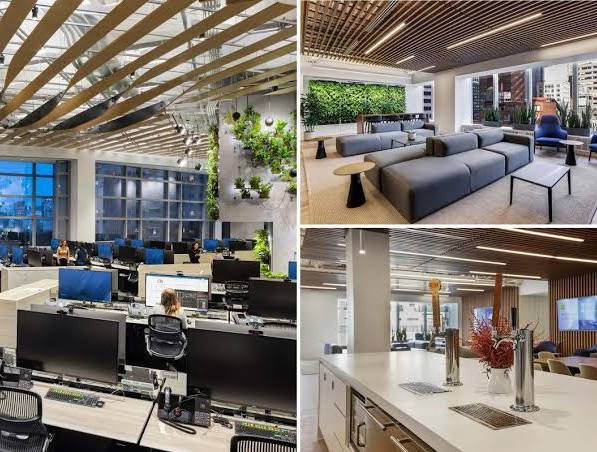

Ước mơ lớn nhất
Mình muốn trở thành một lập trình viên hoặc kỹ sư công nghệ thông tin, làm việc trong môi trường thực tế, học hỏi liên tục và có một công việc ổn định. Với ngành CNTT hiện nay, điều quan trọng không phải chỉ là “mơ lớn”, mà là biết học chắc nền tảng, rèn kỹ năng và từng bước tiến lên. Mình hiểu rằng con đường này không dễ, nhưng nếu kiên trì và chăm chỉ thì vẫn có cơ hội để phát triển.
Kế hoạch sắp tới
- Ngắn hạn: Học tốt các môn chuyên ngành như lập trình, cơ sở dữ liệu, tin học, và nâng cao khả năng ngoại ngữ để có thể làm việc trong môi trường công nghệ quốc tế.
- Trung hạn: Hoàn thành việc học tại Đại học Hải Phòng, rèn kỹ năng thực hành qua dự án, học thêm kiến thức về lập trình web, phần mềm hoặc IT hỗ trợ.
- Dài hạn: Tìm được công việc phù hợp trong ngành CNTT, xây dựng nền tảng nghề nghiệp vững chắc và dần tiến tới vị trí ổn định hơn như lập trình viên, kỹ thuật viên công nghệ hoặc chuyên viên phát triển hệ thống.
Lời nhắn
Ước mơ không cần quá xa vời, chỉ cần thực tế, đúng hướng và có nỗ lực. Mình tin rằng nếu học chăm chỉ và không ngừng cố gắng, một ngày nào đó mình sẽ đạt được những gì mình mong muốn.
Hình ảnh
